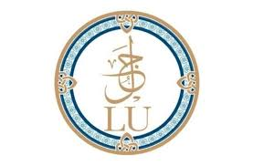
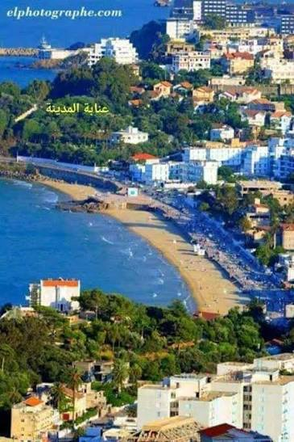
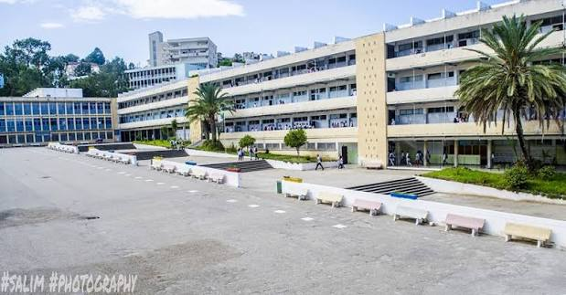
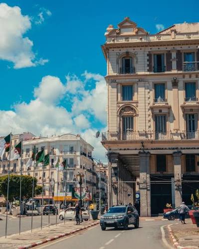
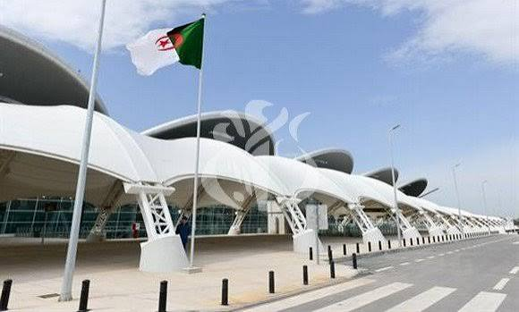
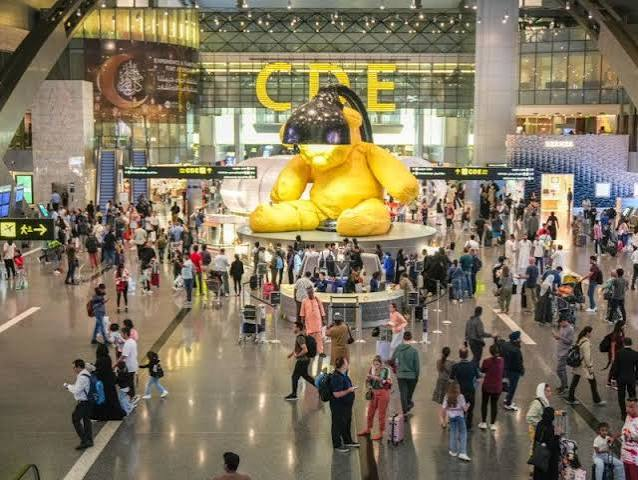
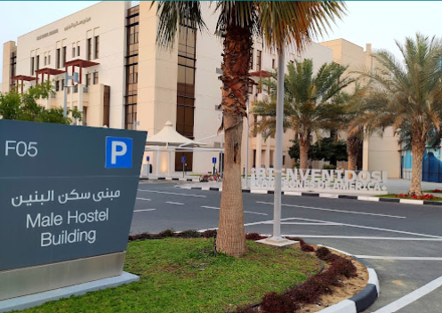
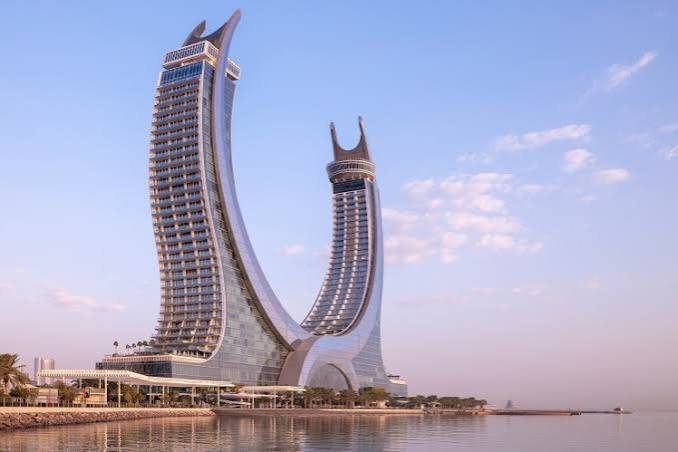
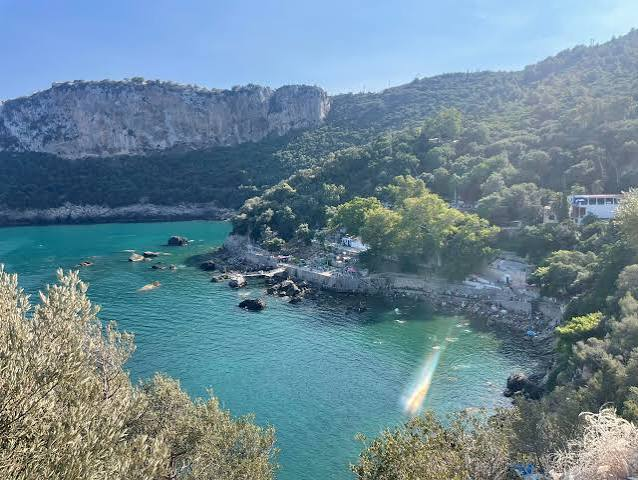

Lusail University · Qatar · 2026
International Student Story Competition
An Algerian student's journey to Qatar
ADEM LAHCEN AYAD
Student ID: 202402678
Chapter I

Annaba bay or corniche'">School in Algeria is serious business. From the earliest years, there is an understanding — unspoken but present in every classroom — that education is the primary path forward. It is not a background condition of childhood. It is the foreground. Parents remind you of it. Teachers reinforce it. The national exams carry a weight that shapes entire years of a student's life.
I grew up inside that system, in Annaba, in the northeast of the country. Annaba is not a small city — it has history, industry, a university, a port active for centuries. But it is also a city where the ceiling of ambition can feel defined by what is immediately visible: the same institutions your parents attended, the same career paths, the familiar geography of possibility.
Chapter I — continued

School or lycée years'">My school years were shaped by the Algerian curriculum — dense, demanding, weighted heavily toward mathematics and the sciences. The baccalaureate loomed over the final years of high school the way a storm looms on the horizon: visible long before it arrives, and everything in the meantime is preparation. I studied seriously not because I had no other interests, but because I understood early that results were the only currency that opened doors.
What the Algerian school system gave me was discipline. The ability to sit with difficult material until it became familiar. The habit of working when motivation is absent. A respect for rigour I would only fully appreciate when I encountered environments where it was also expected of me. At the time it felt like the texture of life. In retrospect, it was preparation for something I did not yet know was coming.
Chapter II

Annaba streets or the sea'">Before I talk about leaving, I need to talk about what I was leaving. Annaba sits at the northeastern edge of Algeria, where the land curves toward the sea and the afternoon light turns everything golden. It is a city of contradictions — ancient and industrial, loud and intimate, proud and restless. The ruins of Hippo Regius lie at its edge. The sea wraps around it on two sides. In summer, the air smells of salt and jasmine and something that has no name but every person from Annaba would recognise immediately.
I grew up in its streets and rhythms. My friends were there. My family was there. Everything I had ever known was contained within its geography. When you grow up in a place like that, you do not think of it as a city. You think of it as the world. It is only when you leave that you understand it was both smaller and more precious than you ever gave it credit for.
I did not know, the last time I walked its corniche before my flight, that I was saying goodbye. I thought I was just going for a walk.
Chapter III

Airport farewell'">There is a particular kind of silence that fills a home the night before someone leaves it for a long time. In Annaba, that silence is thick with sea air and the distant sound of the Mediterranean. I remember it clearly — my bags already packed, my mother insisting there was still time to eat something. I was nineteen years old. In a few hours I would be on a plane to Qatar, and nothing about that felt real yet.
None of the paperwork captures what it feels like to look around a room you have known your entire life and understand you are about to leave it. That the next time you sit here, in this light, you will be a different person returning to a familiar place. Not the same person who never left.
My father shook my hand at the airport. Not a hug — a handshake that said I am proud of you and please be careful and I will miss you all at once. My mother did not say goodbye. She said "take care of yourself" — and in Arabic, that is not a pleasantry. It is a prayer.
I walked through the gate and did not look back. Not because I was not afraid, but because I knew that if I turned around, I would not keep walking.
Chapter IV

Doha skyline or airport'">The first thing Doha does is overwhelm you with scale. Coming from Annaba — narrow streets, colonial architecture leaning into the sea — the skyline reads like a provocation. Glass towers rising out of flat desert. Highways wide enough to feel like declarations. Everything built to announce that something large is happening here.
The heat is different from Algerian heat. In Annaba it is coastal, softened by water. In Doha the air is dense and absolute — a wall you walk through rather than air you breathe. This place does not accommodate. You adjust to it.
I had one suitcase, one carry-on, and an address I had memorised but never visited. I knew no one. I was nineteen years old, standing outside Hamad International Airport, and for the first time understood what it means to be completely alone in a place that does not yet know your name.
It was terrifying. It was also, in a way I could not have articulated then, the beginning of something.
Chapter V

Campus or lecture hall'">Supply Chain Management is not a subject that announces itself dramatically. But it is deeply practical, and I had chosen it for that reason — to understand how things move across complex systems. In Qatar, a country that imports the vast majority of what it consumes, that question felt immediately relevant.
The coursework was harder than I expected, not because the material was beyond me, but because the environment demanded a different kind of engagement. Professors expected participation, not just attendance. Exams required reasoning, not just recall. Courses like Microeconomics forced me to model decisions, consider trade-offs, and understand how incentives shape behaviour at every level of an economy.
Group assignments introduced another challenge entirely. My classmates came from across the world — Asia, Africa, the Middle East, Europe. Working alongside people with genuinely different backgrounds taught me things no textbook covers: how to build consensus, how to disagree productively, how to carry your share when the stakes matter to everyone involved.
Chapter VI
The first Ramadan I spent away from Annaba was the one that taught me what home actually means. In Algeria, Ramadan is a collective experience. The streets empty before iftar and fill again suddenly. The smell of chorba drifts from every window. Families gather. Neighbours share food. You do not experience Ramadan alone — the city experiences it with you.
In Doha it is different. Ramadan is present — visible in shortened hours, lanterns, dates at reception desks — but it is not your Ramadan. The rhythms are not the ones you grew up with. The food is not your mother's. The voices breaking the fast around you are warm, but they are not the voices you have heard every year since childhood.
I remember sitting alone that first evening, waiting for maghrib, with a simple plate I had prepared myself. No chorba. No family. Just the call to prayer from a mosque I had not yet learned the name of, in a city still learning mine.
I ate. I was grateful. And I missed home in a way that had no bottom to it.
Chapter VII
At some point during the first semester, I stopped counting the days. Not because I had stopped missing home, but because the missing had become something I carried rather than something that stopped me. Annaba remained vivid — the sound of the port, the smell of the medina, the quality of light over the bay. But Doha had become real too, in its own way.
Being Algerian in Qatar places you in a particular position. You are Arab, but differently Arab. African, but from a coast that faces Europe. Muslim, but shaped by a history most of your classmates have not shared. I found myself explaining Algeria constantly, and in doing so, understanding it more clearly than when I lived inside it.
The two places did not compete. They accumulated. Each semester added another layer — another reference point, another version of myself that could only have been built here, in this distance from home.
Chapter VIII
There was one phone call I remember more than the others. It was late in my first semester, sometime in November. I had just finished a difficult week — exams, a group project that had not gone well, the exhaustion that comes from being constantly alert in a culture not entirely yours. I called home without a specific reason. Just to hear voices.
My mother answered and asked how I was eating. My father asked about my grades. My younger sibling said something in the background that made everyone laugh. The call lasted twenty minutes. Nothing important was said.
When I hung up, I sat in silence for a long time. There is a specific loneliness that only exists after a good phone call home — when the voices are gone and you are suddenly aware of exactly how far away you are. Not grief. Something more precise. The knowledge that the people you love most are living their lives in full, in a place you can no longer walk to.
I learned to sit with that feeling. But that first time, in November, in a room in Doha — it was simply heavy.
Chapter IX

Lusail University or Qatar landmark'">Qatar has made a conscious decision about what it wants to become. That ambition is visible in its infrastructure, its institutions, and the investment in education that brought universities like Lusail into existence. Living inside that project — even as a student, even temporarily — recalibrates how you think about possibility.
I arrived from a country with enormous potential and significant friction. Algeria has resources, talent, history, and a young population. What it has not always had is systems — institutions that function predictably, infrastructure that scales, frameworks that reward effort consistently. In Qatar I saw what it looks like when those things are prioritised. It did not make me disillusioned with home. It made me more interested in it.
The standard I held myself to shifted. Not because Qatar is perfect, but because proximity to ambition is contagious. My classmates were building careers, developing ideas, thinking seriously about the next ten years. That environment raises the baseline of what you consider acceptable effort.
Chapter X

Back in Annaba'">The flight back to Annaba at the end of my first year was only two hours. It felt much shorter than the one that had brought me to Doha. I expected relief. It arrived — but mixed with something I had not anticipated: a quiet disorientation. The city was exactly as I had left it. The same streets, the same light over the bay. My room was unchanged. Everything that was supposed to feel like home felt like home.
And yet I moved through it differently. I noticed things I had never noticed — the gaps, the inefficiencies, but also the warmth and specific humanity of a place not engineered for productivity. I was impatient with things I had previously accepted without question.
My friends noticed before I did. You seem different, one of them said. He was not wrong. I was the same person. I was also not exactly the same person. Annaba had not changed. I had moved around it slightly, and the angle made everything look different.
Chapter XI
I am still studying. Still adjusting. Still learning what it means to build a life across two places at once. There are days in Doha when I miss the sea in Annaba so much it is almost physical. There are days back home when I feel the pull of everything I left in Qatar — the pace, the exposure, the sense that something larger is possible.
The journey does not move in one direction. It loops and doubles back. It changes you, then changes how you see where you came from, then changes you again. There is no arrival point. Only the next semester, the next exam, the next phone call home, the next morning in a city becoming more familiar without ever fully becoming yours.
I left Annaba at nineteen to study Supply Chain Management at Lusail University. What I did not expect was that the most important supply chain I would study would be the one connecting who I was to who I am becoming — each link formed by a flight, a semester, a conversation, a challenge met or failed and tried again.
That chain is still being built. I am still in the middle of it. And for the first time, I am not afraid of how long it is.